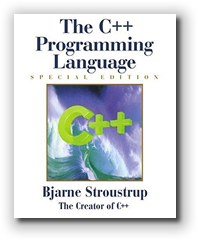
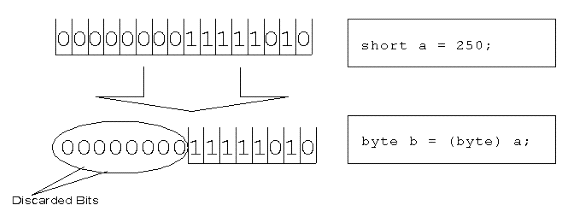

When you use the addition operator to add two numbers together, like this:
int sum = num1 + num2;
the operands, num1 and num2,
are not changed at all; the variable sum, which
stores the results of the calculation, is changed,
however. This kind of change is called a side effect.
Side effects occur whenever an expression changes the value of one of its operands.
The assignment operator produces a side effect, as do the increment and decrement operators, and the various shorthand assignment operators.
Modifying an operand's value isn't always, or even normally, desirable. To avoid such modifications, some operations create temporary copies of a variable or value, and use the modified temporary value in their calculations. These are called conversions or casts.
Let's start by first looking at assignment.
Assignment
A variable, you'll recall, is a memory location that contains a value. So, the most common thing you'll do with your variables is to change the value that they contain.
You do this through assignment.
Here is an example of an assignment statement that creates a variable named x using the initial value 5, and then uses the assignment operator to store the value 23 into the variable x:
int x = 5; // initialize to 5
x = 23; // assign (copy or store) the value 23 in x
The assignment operator is a binary operator whose operation is to:
Copy the value on the right into the variable on the left, and return the result copied as its value
This means that, for the assignment operator, the operand on the left must be a variable; it cannot be a constant or a method invocation.
You might find this confusing because in math the "equals" sign used in an equation does not mean "copy"; instead it means that the value on the left and the value on the right are identical.
Here's an example. In Algebra, you could never say
x = x + 1
because for every value of x, x + 1 is never equal to x. In Java, however, this statement simply means to add x and 1 together, and then store the result of the operation back into the variable x.
This works both ways. In Algebra, the following is legal
13 = a + bbecause there are several values for a and b that equal 13. In Java, though, it is illegal (and nonsense), because 13 is not a variable that can be changed.
The Value of Assignment
Now, let's look at something new about the assignment operator. Since assignment is an operator, it produces a value, unlike languages like Pascal or Visual Basic where assignment is purely a statement that carries out the copy operation.
The assignment operator not only copies the value on its right into the variable on its left, but it also produces a value; the value produced by an assignment is the value copied into the variable on the left.
Exercise
Let's see what this means in practice. What do you suppose will happen if you type this line that contains an assignment.
System.out.println(a = 1);
Open DrJava and then, in the Interactions Pane:
- Create an
intvariable nameda, initialized to0. - Type the line shown here (not forgetting the semicolon).
- On the next line, simply type the variable name
a, with no semicolon, and hit Enter.
Notice that the value printed by System.out.println()
(that is, the value of the expression a = 1,
and the value stored in a are
both the same value. That's not true for every side-effect
operator, however.
Technically the fact that the variable on the left is modified by the assignment operation is considered a side effect. Of course, most of us use the assignment operator only for this side effect and don't give much thought to the value that is produced.
Because assignment first examines the expression on its right before copying it to the variable on its left, we say that assignment is right associative. This simply means it works from right-to-left, instead of left-to-right like most of the other binary operators.
Chained Assignment
Because assignment is right associative, we can "chain" assignment statements together like this:
x = y = z = 10;
This expression first applies the assignment operation to the
variable z, copying the value 10 into the variable.
The expression z = 10 produces a value, (10),
which is used as the right-hand operand in the next assignment,
where 10 is copied into y. In the same way,
assigning 10 to y produces a value (10),
and that value is used as the right-hand operand for the final
assignment to x.
There is one potential pitfall you may encounter when doing this: it does not work when defining a new variable, only on variables that already exist. That means you cannot write:
int x = y = z = 10; // Not OK
Instead, to get the desired effect, you must write:
int x = 10, y = 10, z = 10; // Initialization
Shorthand Assignment
Many times, when you perform an operation on a variable, you store the result of that operation right back in the same variable. If you are summing up the total in a checkbook, for instance, this would be a common expression:
balance = balance - checkAmount;
What we really want to do is just subtract
checkAmount from balance, and
leave the result in the balance variable. The
shorthand-assignment operators give us a concise way to
do that.
Using these operators we could write the previous expression as:
balance -= checkAmount;
There are shorthand assignment operators corresponding to most of the basic numeric operators. Here is what each of them mean:
| Original | Shorthand |
|---|---|
| a = a + b | a += b; |
| a = a - b | a -= b; |
| a = a / b | a /= b; |
| a = a * b | a *= b; |
| a = a % b | a %= b; |
Exercise
Let's explore some of the different shorthand assignment operators and how they work with different kinds of expressions. In the DrJava Interactions Pane, type in the following line of code, and then evaluate each of the following expressions. After each expression, see if you can write the equivalent expression using the shorthand assignment operators.
- int x = 2, y = 3, z = 4, sum = 5, num = 6;
- x = 2 * x;
- x = x + y – 2;
- sum = sum + num;
- z = z * x + 2 * z;
- y = y / (x + 5);
Remember, your equivalent expression should yield exactly the same value as the original.
Increment and Decrement
One common operation in most computer programs is to add or subtract one from a variable and then store the result back into the same variable. This is called incrementing or, (when subtracting), decrementing the variable.
This is easily done using the operators you've met already (addition, subtraction, and assignment) like this:
int a = 5;
a = a + 1; // Increment
a = a - 1; // Decrement
One problem with this solution is that the expression
a + 1 produces a temporary value (like all
expressions) that must be stored before it is finally
copied back into the variable a by the
assignment operator.
Since most computer hardware contains special instructions to add one to, (or subtract one from), a variable "in place" (that is, without creating a temporary variable), Java provides operators that use these more efficient instructions.
The Operators

The increment (++) and decrement (--)
operators are unary operators that can only be
applied to a variable; you can't use them with literals,
constants, or method calls. When you use the increment operator
like this
++a;
the value that was, previously, stored in a is
incremented by 1. You could not write
++10;
because 10 is not a variable; it would be illegal.
Since the increment operator modifies its operand, like the assignment operator, this behavior is called a side effect. In addition to this side effect, the increment operator also produces a value, which has some interesting properties, as you'll see next.
Of course you're probably most familiar with this operator, since it gave its name to the C++ programming language, invented by Bjarne Stroustrup, whose book appears in the picture here.
Pre and Post
Even though increment and decrement are unary operators, they can be used in two different ways: they can be placed before or after a variable like this:
++a; // pre-increment
b++; // post-increment
When placed before the variable, it is called a pre-increment (or decrement, depending upon the operator) expression. When placed after the variable, it is called a post-increment (or decrement) expression.
As far as the side effect is concerned it doesn't make a bit of difference whether the operator is placed in front of, or after, a variable. In both cases, the variable is left holding a value one greater (or less) than it was before.
The expression value produced by an increment or decrement, however, depends on whether it is a post or pre expression.
In pre-increment (decrement), the variable is first modified and the result of the expression is the new (or expression) value. In post-increment (decrement), the value of the expression is the value the variable had before it was changed.
This can be confusing, so here are some examples:
int c = 5; // Initial value
int d = 5; // Initial value
int a = ++c; // a is 6, c is 6
int b = d++; // b is 5, d is 6
After these operations, the variables c and
d both have the value 6. Changing the value
stored in c and d is a side
effect of the increment, and that remains the same
whether you use pre or post increment.
The variable a also has the value 6, because
the expression ++c means "first change c
and then return the changed value as the result of the expression".
The variable b, however has the value 5,
because the expression d++ means "change the value
of d, but use the value that d
had before the change, as the result of the expression".

Exercise: "Be the Computer"
OK, it's your turn to "Be the Computer". I've created columns for
the variables a, b and c.
You should trace their value as the program runs.
Tracing simply means to mentally
execute each line of code and then enter the state or value
of each variable in the appropriate column.
| a | b | c | |
|---|---|---|---|
| int a = 5, b = 6, c; | 5 | 6 | U |
| a = b++ + 3; | |||
| c = 2 * a + ++b; | |||
| b = 2 * ++c – a++; |
After you've filled in the columns, use DrJava to check your work afterwards.
Mixed-Type Operations
Not all expressions involve integers.
You can also have expressions using floating-point numbers,
characters, and Strings. You can even have
expressions that involve all of the above.
Remember, every expression produces a value, and each value
produced by an expression has a particular type. When you add
or subtract two integers, for instance, the result of that
expression is an integer. When you add or subtract two
floating-point numbers, the result is a floating point number.
If you perform an operation with a character, the result is a
character, and with a String, the result is a
String.
Simple, but . . .
What happens when you write this?
a = 5 * 3.0;
Whoa! Now we've got a problem. You know that the
literal 5 is an int. You also know that
the floating-point literal 3.0 is a
double (because it doesn't have the F suffix).
What you don't know is the result of multiplying
5 * 3.0, or what type the variable
a is.
Let's look at both those questions.
The Data Hierarchy and Promotion
Not all numeric types are created equal. A short
can hold more information (a greater range of values) than a
byte, and an int can hold more
information than a short. Likewise, a
double can hold more information than a
float—it is more precise.
When Java encounters an expression that uses different types of operands, it first determines the most precise of the operands using this data hierarchy. Then, it creates temporary, unnamed variables of the most precise type, initializing those temporary variables using the less-precise values. This process is called promotion or, a widening conversion.
Let's look at our example again. Of our two values, 5
and 3.0, 3.0 has greater precision—it is higher
in the data hierarchy. To perform the calculation, Java
creates an unnamed temporary double variable
that contains 5.0, to take the place of the
int value 5 during the calculation.
The int value 5 is not changed in any way
by this.
Finally, the multiplication is performed using the
double values 3.0 and 5.0 and the
result is the double value 15.0.
Conversion and Assignment
Operations like mixed-type multiplication and addition
are pretty straightforward, but what about assignment?
What value is stored in the variable a, and
what type of variable must a be for
the code to work?
 When it comes to mixed-type arithmetic, assignment is special
among the operators, because Java will not allow you to store a
"more precise value" in a "less precise" bucket. Java will
only permit widening conversions, as shown in
the figure here.
When it comes to mixed-type arithmetic, assignment is special
among the operators, because Java will not allow you to store a
"more precise value" in a "less precise" bucket. Java will
only permit widening conversions, as shown in
the figure here.
What this means for our example is that Java will refuse to
compile it unless the variable a is a
double variable. If a were an int or
a long or even a float, information
would (potentially) be lost by storing the double
value 15.0 in the less precise variable.
On the other hand, if the variable is of a higher (more precise) type than the value being stored, Java will perform the assignment without so much as a pause. For instance,
double b = 123.45F;
is perfectly OK because the less-precise
float value is easily stored in the more-precise
double variable. However, the reverse is not true.
The expression
float f = 123.45;
will not compile because the literal 123.45 is of
type double and Java will not store it in a
float variable.
Here's another, similar example, using integers:
int x = 123;
byte b = x; // Not OK
long l = x; // OK
Narrowing Conversions and Casts
 Narrowing conversions, such as those depicted here,
are those where the conversion might
cause some information to be lost. When
you attempt to perform an assignment that
causes a narrowing conversion, Java won't
compile your code, (as you saw in the last
section.)
Narrowing conversions, such as those depicted here,
are those where the conversion might
cause some information to be lost. When
you attempt to perform an assignment that
causes a narrowing conversion, Java won't
compile your code, (as you saw in the last
section.)
Why we all appreciate Java's efforts to protect our
data, sometimes we really do want to store the value
15.0 in an int, or even a byte
variable, because we know that no information will be
lost, even if Java doesn't. When you want to do this, you need
to perform a type cast, usually shortened to cast.
A cast tells Java to "try" to store the value, despite its reservations. The syntax for the cast operator is:
(type) original-value
Java creates a temporary unnamed variable when you do this; it does not change original-value in any way.
Here's an example that uses a type-cast to assign the
int value 123 to a byte variable:
int x = 123;
byte b = (byte) x; // OK
Watch Out
The problem with casts is that they always "succeed" in the sense that Java will store something. It may not have the effect you desire, however. Here are two examples. Can you tell what happens?
byte b = (byte) 256; // OK???
int n = (int) .999; // OK???
In the first example, the result is zero, because the bit
pattern for the int 256 is
0000-0000-0000-0000-0000-0001-0000-0000
but when stored in a byte, only the right-most
eight bits are used. The bit in position 8, (numbered starting
at zero from the right), is simply discarded.
A similar situation occurs when you attempt to cast the
int value 250 to a byte.
Although a byte contains enough bits to
represent the number 250 as an unsigned number,
as a signed number it doesn't, so the cast results in a negative
number, as you can see here:

Finally, in the last example, thedouble value
.999, when converted to an int is
zero, because an int is incapable of representing
a fractional number. When converted, the fractional part is
not rounded, but simply discarded or truncated.
Exercise: "Be the Computer"
Let's finish up with one last exercise. Mentally execute each line of code below, and place the resulting values of each variable into the appropriate column.
| a | b | c | sum | |
|---|---|---|---|---|
| int a = 3, b = 5, sum; double c = 14.1; | 3 | 5 | 14.1 | U |
| sum = a + b + (int) c; | ||||
| c /= a; | ||||
| b += (int)c – a; | ||||
| a *= 2 * b + (int)c; |
After you've filled in the columns, check your work using DrJava.

Side Effects Summary
- Side effects occur when an expression changes the value of one of its operands.
- Side-effect operators include increment, decrement, and all the different versions of the assignment operator.
- Assignment is not equality as in algebra. Assignment means, copy the value on the right into the variable on the left. The left hand side of an assignment expression must be a variable, not a constant or literal.
- Assignment is an expression in Java (not a statement), and
an assignment expression produces a value. That value can be
used to produce chained assignments:
a = b = c = 3;This works because the assignment operator is right-associative. - Shorthand assignment allows you to store the result of a
binary operation back into one of the operands itself. To add the
value of
btoa(and store the result back ina), you can write:a += b. - All shorthand assignment operators have the same level of precedence.
- The increment and decrement operators are unary operators that can only be applied to a variable (never a literal or a constant). The effect is to add one to, (or subtract one from), the variable used.
- Both operators may be used before (called pre-increment), or following (called post-increment) their operand.
- Both pre and post-increment have exactly the same side effect; they both add one to the variable applied to. (Decrement subtracts one, of course).
- The expression value for each use of the operator is different. With pre-increment (or decrement), the expression value is the same as the changed value of the variable. With post-increment (or decrement), the expression value is the value of the variable before it was modified.
- With mixed-type expressions, the expression is evaluated according to the rules of precedence and associativity. When one part of the expression uses different types, the less precise or smaller type is converted or promoted to the larger for purposes of the calculation. The result is the same type as the more precise type.
- Numeric data is arranged in a hierarchy from
bytetodouble. Java implicitly converts lower types to higher types, called widening conversion, because no data can be lost. - Conversions from higher types to lower types (called narrowing conversions) are not done automatically. You can explicitly request such a conversion by using a type-cast.